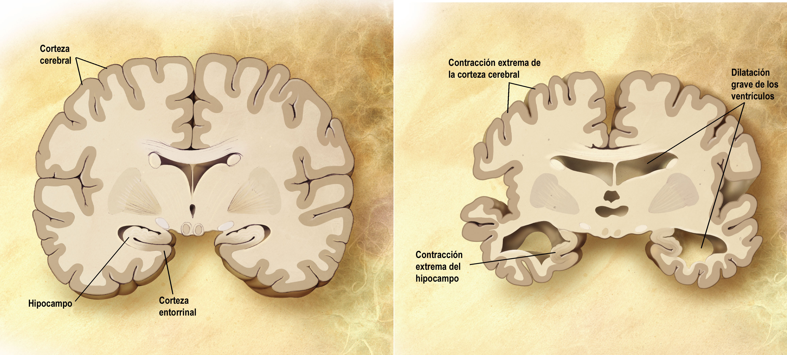

Alzheimer
Descripción
La enfermedad de Alzheimer es la forma más común de demencia entre las personas mayores. La demencia es un trastorno cerebral que afecta gravemente las habilidades de pensamiento y memoria. Si tiene Alzheimer, puede afectar su capacidad de razonar o aprender nuevas habilidades hasta hacer difícil realizar sus actividades diarias.
El Alzheimer comienza lentamente a lo largo de muchos años. Primero afecta las partes del cerebro que controlan el pensamiento, la memoria y el lenguaje. Puede confundirse con cambios normales de la memoria con el envejecimiento. Sin embargo, el Alzheimer no es una parte normal del envejecimiento. Los cambios cerebrales por la enfermedad eventualmente provocan síntomas que empeoran con el tiempo.
Causas
Los investigadores no comprenden completamente qué causa la enfermedad de Alzheimer. La edad es el mayor factor de riesgo. Su riesgo también es mayor si un miembro de la familia ha tenido la enfermedad. Sin embargo, las personas que desarrollan Alzheimer no siempre tienen antecedentes familiares de la enfermedad.
Los investigadores creen que las causas de la enfermedad de Alzheimer pueden ser una combinación de cambios relacionados con la edad en el cerebro, junto con factores genéticos, de salud y de estilo de vida. Algunas afecciones médicas relacionadas con un mayor riesgo de padecer Alzheimer incluyen:
- Pérdida de la audición
- Depresión
- Deterioro cognitivo leve
- Conmoción cerebral u otra lesión cerebral traumática
Un problema relacionado, el deterioro cognitivo leve, causa más problemas de memoria de lo normal en personas de la misma edad. Muchas personas con este deterioro, aunque no todas, desarrollarán Alzheimer.
Síntomas
Los síntomas del mal de Alzheimer incluyen dificultad con muchas áreas de la función mental, entre ellas:
- El comportamiento emocional o la personalidad
- El lenguaje
- La memoria
- La percepción
- El pensamiento y el juicio (habilidades cognitivas)
El mal de Alzheimer aparece primero generalmente como olvido.
El deterioro cognitivo leve (DCL) es una afección en la que una persona tiene más problemas de memoria y pensamiento que otras personas de su edad. Las personas con DCL tienen ligeros problemas con el pensamiento y la memoria que no interfieren con las actividades cotidianas. Con frecuencia, están conscientes del olvido. No todas las personas con DCL progresan a mal de Alzheimer.
Los síntomas del DCL incluyen:
- Dificultad para realizar más de una tarea a la vez
- Dificultad para resolver problemas o tomar decisiones
- Olvidar nombres de personas conocidas, eventos recientes o conversaciones
- Necesitar más tiempo para llevar a cabo actividades mentales más difíciles
Pruebas y exámenes
El diagnóstico del mal de Alzheimer se hace cuando ciertos síntomas están presentes y al verificar que otras causas de demencia no estén presentes.
Un proveedor de atención médica experimentado a menudo puede diagnosticar el mal de Alzheimer con los siguientes pasos:
- Realizar un examen físico completo, que incluya un examen neurológico
- Hacer preguntas acerca de la historia clínica y los síntomas de la persona
- Pruebas de la función mental (examen del estado mental)
- Pruebas neuropsicológicas
- Pruebas genéticas y de proteínas asociadas con el mal de Alzheimer
- A veces se necesita una tomografía por emisión de positrones (TEP) y una recolección de líquido cefalorraquídeo (LCR) para confirmar el mal de Alzheimer
Se pueden realizar exámenes para buscar otras posibles causas de demencia, entre ellas:
- Anemia
- Tumor cerebral
- Infección prolongada (crónica)
- Intoxicación por medicamentos
- Depresión grave
- Aumento del líquido en el cerebro (hidrocefalia normotensiva)
- Accidente cerebrovascular
- Enfermedad de la tiroides
- Deficiencia vitamínica
Tratamiento
No existe cura para el mal de Alzheimer. Los objetivos del tratamiento son:
- Disminuir el progreso de la enfermedad (aunque esto es difícil de hacer)
- Manejar los síntomas, tales como problemas de comportamiento, confusión y problemas del sueño
- Modificar el ambiente del hogar para que sea más fácil desempeñar las actividades diarias
- Apoyar a los miembros de la familia y otros cuidadores
Se utilizan medicamentos para:
- Disminuir la velocidad con la que empeoran los síntomas, aunque el beneficio de usar estos medicamentos puede ser pequeño
- Disminuir la cantidad de la proteína beta amiloide en el cerebro
- Controlar los problemas de comportamiento, como la pérdida del juicio o la confusión
Expectativas
La rapidez con la cual empeora esta enfermedad es diferente para cada persona. Si el mal de Alzheimer se presenta rápidamente, es más probable que empeore de la misma manera.
Las personas con mal de Alzheimer con frecuencia mueren antes de lo normal, aunque una persona puede vivir entre 3 y 20 años después del diagnóstico.
Probablemente la familia tendrá que planificar el cuidado futuro de su ser querido.
La última fase de la enfermedad puede durar desde unos meses hasta varios años. Durante ese tiempo, la persona se torna totalmente incapacitada. La muerte por lo regular ocurre por una infección o una insuficiencia orgánica.
Imágenes de la enfermedad
